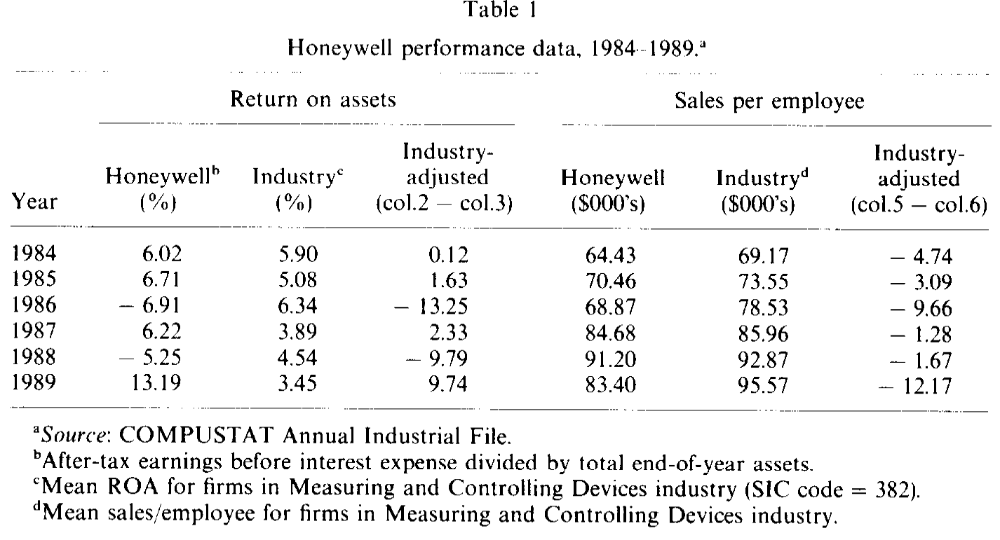
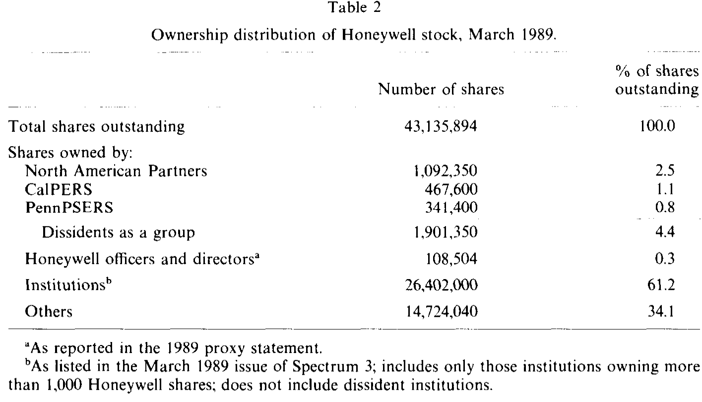
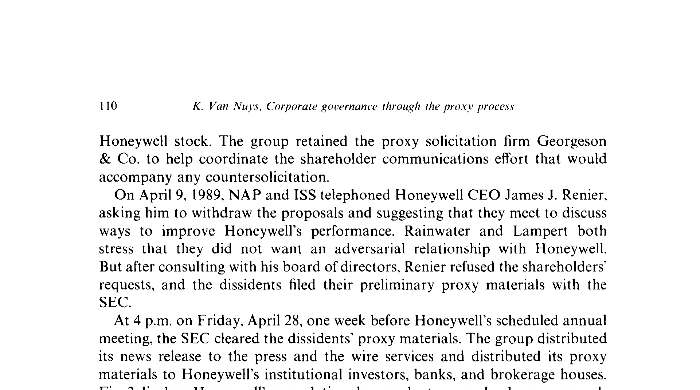
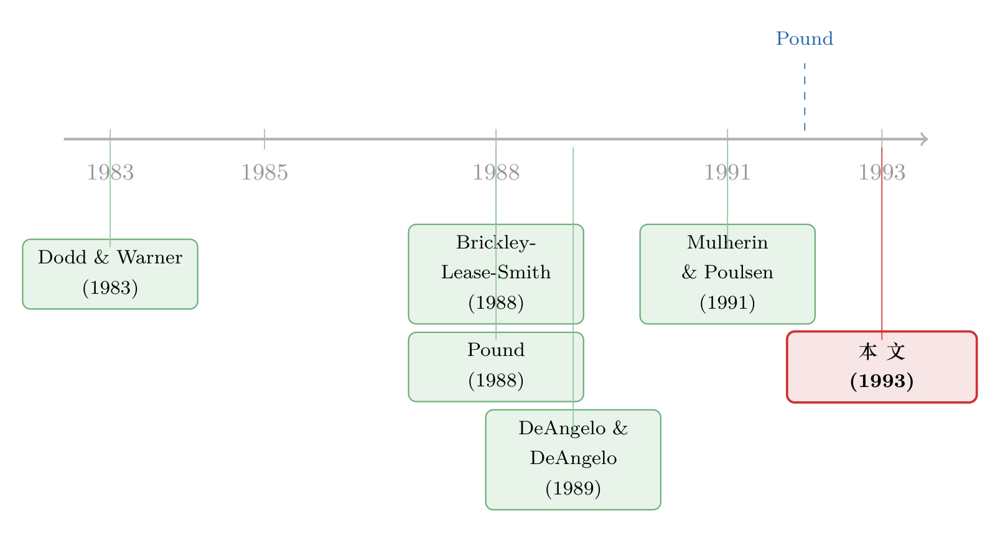

一场被「外人」点燃的股东起义：1989 年霍尼韦尔的代理权之争
本文读的是 Van Nuys (1993, Journal of Financial Economics)：用一桩 1989 年霍尼韦尔（Honeywell）的代理权之争 (proxy solicitation) 做临床式解剖，作者发现了三件反直觉的事——真正给股东创造价值的不是「赢下投票」，而是三个月后的资产重组；点燃这场起义、并掏钱埋单的不是那些挂名的养老基金，而是几个非机构的活跃投资者；而银行与保险公司确实比养老基金更站在管理层一边，可这份「偏心」却无法用它们与公司之间的生意往来来解释。
1 一个时代的落幕，与一道随之而来的难题
先把镜头拉远一点。
整个八十年代，美国公司治理的主角是敌意收购 (hostile takeover)：谁干得不好，就有人来把谁买走、换掉。可进入九十年代，这台机器开始失灵——各州纷纷立起反收购法、毒丸 (poison pill) 和「驱鲨剂」(shark repellents) 遍地开花、垃圾债市场又轰然崩塌。收购一家烂公司，变得既贵又难。数字是冰冷的：Mulherin 和 Poulsen (1991) 数过，向美国证监会 (SEC) 申报的要约收购在 1988 年见顶，达 226 起，到 1990 年只剩 70 起。
于是一个自然的问题浮上来：如果不能再用「买下整家公司」来教训管理层，股东还能怎样参与治理？
答案是一批更「温和」、也更直接的新机制：为董事会席位而战的代理权争夺、Icahn 在 USX 搞的股东顾问委员会、加州和纽约州养老基金的「Just Vote No」、联合股东协会 (USA) 每年点名 50 家烂公司发起股东提案……Pound (1992) 给这些新东西起了个名字，叫公司治理的「政治化」机制，并断言它们将成为九十年代「治理挑战的定义性工具」。
如果真是这样，那么搞清楚这些新机制到底是怎么运转的，就成了理解后收购时代里管理层与股东如何博弈的关键。这正是这篇论文想做的事——它不去跑成千上万家公司的大样本回归，而是把一桩案子掰开揉碎，看个究竟。
2 霍尼韦尔：一家「老好人」公司的麻烦
挑中的案子是霍尼韦尔。
这家 1927 年成立、靠造恒温器起家的公司，在战后逐渐多元化进了武器和计算机，直到 1986 年都从未报过会计亏损。但它有个慢性病：员工太「舒服」，生产率长期跑不赢行业。从 1978 到 1989，它的资产从 $2.8 十亿涨到 $5.3 十亿，可按人均销售额衡量的生产率却始终低于行业均值，股票回报也是。
表 1 把这件事摆得很清楚：霍尼韦尔的资产回报率 (return on assets, ROA) 和人均销售额，常年是负的行业调整值。1989 年人均销售额比行业低了整整 $12,170。

Table 1
接着，麻烦开始连环爆炸。1988 年三季度，因为固定价格的国防合同成本超支，公司突然报出 $2,220 万亏损，《华尔街日报》说这个数字「让一些分析师和投资者目瞪口呆」，更直言「霍尼韦尔管理层已在华尔街失去信誉」。那篇文章还顺手算了一笔账：有分析师估计霍尼韦尔的拆分价值约为每股 $115——而它当时的股价只有 $62.38。一家市值远低于「散件之和」的公司，等于在脑门上贴了「收购我」三个字。
于是，1989 年 2 月，惊慌的董事会在年会上抛出两项反收购章程修正案：第一项是把 12 人董事会分成三组、每年只改选一组的分类董事会 (classified board)；第二项是取消股东以书面同意 (written consent) 行事的权利。两项一旦通过，外人就再也无法在一次年会上拿下董事会控制权了。公司秘书坚称这是为了在恶意收购来临时给董事会「谈个好价钱」的筹码；但在一年绩效糟糕透顶的当口抛出来，许多投资者只读出四个字：管理层自保。
3 真正的主角，是一群「外人」
现在，故事里最有意思的一层登场了。
按通常的叙事，机构投资者——养老基金、共同基金——才是九十年代股东积极主义的主力军。可在霍尼韦尔，点火的人根本不是机构。
读到这份反收购提案、并决意动手的，是一家叫北美合伙 (North American Partners, L.P., NAP) 的投资团体。领头的是时年 27 岁、刚从高盛离职的前收购股票分析师 Edward Lampert（没错，就是后来那位）；背后站着大名鼎鼎的股东积极主义者 Richard Rainwater。他们手里攥着 2.5% 的霍尼韦尔股票，是真金白银押注的非机构活跃投资者。
但光靠 2.5% 撼不动一家机构持股 61.2% 的公司。表 2 把这盘棋的底牌摊开了：

Table 2
要赢，就得让机构投资者社区相信你。于是 NAP 拉来了两家公共养老基金联署——加州的 CalPERS（持股 1.1%）和宾州的 PennPSERS（0.8%）。三家「持不同政见者」加起来，也不过控制 4.4% 的股票。
这里藏着这篇论文最锋利的一刀。那两家养老基金固然把名字签上了反对名单，但它们既没有发起这件事，也不会为它掏一分钱——NAP 承诺承担全部费用。PennPSERS 的首席法律顾问把加入这件事形容为「a no-brainer」（毫无悬念的选择）：反正本来就有反对此类提案的书面政策，又不用花钱，为什么不签？作者由此点出一个少有人讲、却极其重要的事实：
机构可以支持、甚至参与代理权积极主义，但它们一直不愿为之掏钱。这类活动，更可能由那些「不必向谁解释一笔可能打水漂的开销」的非机构活跃投资者来牵头。
换句话说，我们在新闻里看到的「养老基金大战管理层」，台前是机构，台后真正下注、出钱、出力的，常常是 Lampert、Rainwater 这样的个人。（关于机构到底是不是合格的「监督者」，可参见《「替你盯着老板」的人，自己也是个老板》。）
4 识别策略：一桩案子能「识别」出什么？
读到这里，方法论上的警觉自然会被勾起：单一案例研究 (clinical study)，凭什么谈「因果」？
诚实地说，这篇论文不是靠工具变量或断点回归吃饭的。它的「识别」建立在两条腿上。
第一条腿，是事件研究 (event study)。作者沿着霍尼韦尔事件的时间轴，逐个窗口计算累积异常收益 (cumulative abnormal return, CAR)——这里的异常收益定义得很朴素：用霍尼韦尔的日收益，减去一个「与它 beta 相近的公司组成的组合」的收益。关键事件日就那么几个，每一个都对应着一段干净的股价跳动：
- 4 月 28 日（SEC 放行反对方代理材料）：成交量从平日的 25 万股翻倍到 52.8 万股，4 月 28 日与 5 月 1 日的两日 CAR 为
5.1%； - 5 月 12 日（管理层被宣告失败）：两项提案虽都获得了「投票股份」的多数，却没能跨过「全部流通股 50%」这道门槛而流产，当日股价涨逾 2%，5 月 12 与 15 日的两日 CAR 为
1.6%； - 从代理材料寄出到失败揭晓，七周里股价从
$65.75涨到$77.75，累计异常收益6.9%。
图 2 把这段「政治过程」对应的股价与成交量画在了一起——你几乎能看见市场情绪在每个节点上的脉搏。

Figure 2: displays Honeywell’s cumulative abnormal returns and volume surround-
第二条腿，是这桩案子意外催生的一份独一无二的数据。以往研究者面对一个老问题始终束手无策：不同类型的股东，到底是不是按不同方式投票的？因为投票人层面的数据 (voter-level data) 根本拿不到——你只能看到「赞成票占流通股的比例」这个加总数，看不到「谁投了什么」。霍尼韦尔之争留下的，恰恰是它 72 家最大机构股东在这两项议案上实际怎么投的逐户记录。这才让一个一直停留在「推测」层面的假说，第一次有了被直接检验的可能。
5 反转：赢了投票，钱却是「重组」给的
到此为止，故事似乎该收尾在「股东赢了、价值涨了」。但真正关键的一步在于——作者追问：这 6.9% 的价值，到底是「赢下代理权」本身创造的，还是别的什么？
于是反转出现了。
投票获胜后，管理层同意与反对方坐下来谈。Lampert 在桌上提出了一串改善股东价值的想法：回购股票、卖掉霍尼韦尔在东京那家合资企业 Yamatake-Honeywell 的部分股权……三个月后的 7 月 24 日，霍尼韦尔宣布了一次重大重组，几乎照单全收：
- 通过裁员和降本，每年增加
$1.5亿营业利润； - 把对 Yamatake-Honeywell 的持股从 50% 砍到
24.15%； - 把年度股利提高 31%；
- 回购最多
1,000万股——约占其流通股的四分之一。
市场的反应是：股价当天跳涨 $3.88 至 52 周新高 $89.38，成交 190 万股，重组公告的两日 CAR 达 6.8%。
把两个数字摆在一起，论文的核心论断就立住了：代理权之争本身（解决了「投票」这件事）带来的异常收益，与一次实打实的资产重组（解决了「公司到底该怎么经营」这件事）带来的异常收益量级相当，而后者的经济意义要重得多。代理权的胜利，更像是一根催化剂——管理层私下承认重组「本就在考虑之中」，但来自反对方的公开压力，把一个酝酿已久的决定真正推上了轨道。
这正是这篇论文反复要讲透的那一个核心：新的「政治化」治理机制，其价值不在投票桌上的输赢，而在它能否撬动公司去做那些早该做、却一直没做的实事。投票只是序幕，重组才是正片。
6 第二条暗线：银行和保险，为什么更「听话」？
借着那份珍贵的逐户投票数据，论文还顺手解了一道悬了很久的公案。
Brickley、Lease 和 Smith (1988) 在大样本里发现一个规律：一家公司里银行和保险公司持股越多，投票支持管理层反收购提案的股份比例就越高。他们的解释是「商业压力 (commercial pressure)」——银行、保险公司往往和它们投资组合里的公司有生意往来（贷款、承保），怕投了反对票就丢了这门生意，所以比养老基金这类更独立的股东更愿意站管理层一边。
可这里有个识别上的硬伤：加总数据看到的「银行保险持股越高、支持率越高」，也可能是因为——有大量银行保险持股的公司，本来就倾向于提出争议更小的议案。要真正分清，你必须看银行保险自己到底怎么投的。
霍尼韦尔的数据给了答案的前半段：银行和保险公司，确实比养老基金和独立投资管理人更支持管理层的两项提案。方向，和「商业压力」假说一致。
但真正关键的检验在后半段。作者把「与霍尼韦尔有已知生意往来」的银行/保险，和「没有这种往来」的同类机构放在一起比——如果商业压力是真因，前者该明显更挺管理层。结果呢？「两组投票方式相同」这一原假设无法被拒绝。也就是说：观察到的投票差异虽然和商业压力的故事「兼容」，但那个故事里最关键的一环——生意往来本身——在这个案子里并没有得到有力支撑。
这是一个诚实而克制的结论：它没有去推翻 Brickley-Lease-Smith，而是指出，加总相关性背后那条被默认的因果链，落到个体层面时其实相当脆弱。
7 文献脉络
把这篇论文放回它生长的那条藤蔓上，会看得更清楚。
最早，研究者关心的是传统的代理权争夺本身值不值钱：Dodd 和 Warner (1983) 系统研究了为董事席位而战的 proxy contests，DeAngelo 和 DeAngelo (1989) 进一步刻画了代理权之争与公众公司治理的关系，Pound (1988) 则追问代理机制下「股东监督」到底有没有效率。
与此并行的，是反收购修正案这条线：它们到底是保护股东、还是管理层自保？以及一个更技术的问题——这些修正案在投票中是怎么通过的，谁的票更重要（Brickley、Lease 和 Smith 1988；Bhagat 和 Jefferis 1991）。Brickley-Lease-Smith 提出的「银行保险因商业压力而挺管理层」假说，正是本文第二条暗线要去直接检验的靶子。

再往后，Pound (1989) 开始关注针对管理层反收购提案的反向劝票 (countersolicitation) 会如何影响股价；到了 Pound (1992)，他干脆宣告收购时代结束、「政治」走进公司控制，把这些零散的新机制统一命名。Mulherin 和 Poulsen (1991) 则用数据records下了敌意收购退潮的事实。
Van Nuys (1993) 恰好坐在这几条线的交汇处：它用一桩「机构首次与个人联手发起代理倡议」的标志性案例，同时回答了三个分属不同支线的问题——价值从哪来（重组 vs. 投票）、谁来牵头并埋单（个人 vs. 机构）、不同机构是否真的因生意往来而投票不同。它是把大样本里的「相关性」拖到单一案例的显微镜下做活检的一次尝试。（沿着「散户在代理过程中是否真的在投票」这条线往今天走，可参见《散户其实在「投票」，只是我们一直假设他们不在乎》；关于机构用脚投票、用股权变动表态，可参见《用脚投票：被炒掉的 CEO 背后，是谁先悄悄离场》。）
8 评论与延伸（Q&A + 研究方向）
(a) 几个可能的疑问
Q：单一案例研究，结论能外推吗？凭什么相信它？
老实说，外部效度是它最大的软肋——n=1，无法谈统计意义上的因果。它的价值不在「平均效应」，而在机制：大样本能告诉你「代理之争平均带来多少 CAR」，却看不见钱到底从投票还是从重组来、谁在台后出钱、银行为何挺管理层。这桩案子因为留下了逐户投票数据和清晰的时间线，恰好能把这些机制一层层剥开。把它当成「假说发生器」和「机制验尸」，而不是「效应估计器」，就对了。
Q：6.9% 和 6.8% 这两个 CAR，能干净地归因吗？会不会本来就有收购传闻在推动？
这正是识别上要打的问号。整段时间里，霍尼韦尔头上一直悬着收购传闻（分析师估的拆分价 $115 vs. 当时股价 $62），股价里混着「被收购概率」的变化。作者用「相似 beta 组合」做基准来剥离市场与风险因子，但剥不掉公司特定的收购预期。所以更稳妥的读法是：CAR 度量的是「市场对这一连串治理事件的净评价」，而把投票和重组的贡献分开，靠的是两个窗口量级相当这一对照，而非严格的反事实。
Q：管理层坚称重组「本来就会做」，那这场代理之争岂不是没有功劳？
这是「催化剂」论断的要害。论文的措辞很克制：重组或许已在酝酿，但公开的劝票压力「可能催化了把一个已在考虑中的重组真正推上去的决定」。无法证明反事实里重组不会发生，但能证明的是：投票失败后管理层才同意会谈、会谈中接受了反对方的具体建议、三个月后落地。时序和内容上的吻合，构成了「压力起了作用」的间接证据，而非铁证。
Q：既然方向和「商业压力」假说一致，为什么还说它没被支持？
因为「方向一致」和「机制成立」是两回事。银行保险更挺管理层，可能因为商业压力，也可能因为它们投资风格更保守、或更看重票息稳定。真正能识别商业压力的，是「有生意往来 vs. 无生意往来」的同类对比——而这一步，原假设「两组投票相同」无法被拒绝。这是一个典型的「加总相关性稳健、但底层因果链脆弱」的例子。
Q：提案「获得了投票多数却仍然失败」，这本身说明什么？
说明门槛设计至关重要。两项反收购修正案都拿到了「已投票股份」的多数，却因为没跨过「全部流通股 50%」这条线而流产。在机构持股 61% 却未必全员出席投票的格局下，「按流通股计票」相当于把弃权和未投票当成了反对票，这本身就是一道对管理层不利的程序设计。治理之争里，规则常常比偏好更早决定胜负。
Q：为什么是「外人」而不是机构来牵头和出钱？这是偶然吗？
论文给的是一个激励结构上的解释，而非偶然：机构（尤其公共养老基金）是代理人，要为「可能打水漂的积极主义开销」向受益人交代，因此天然不愿出钱；而 Lampert、Rainwater 这样的非机构投资者用自有资金下注、自负盈亏、不必向谁解释，反而有动力牵头。机构愿意「搭便车式」联署支持，却把出资和发起留给了别人。这是一个关于「谁来承担治理公共品成本」的微观样本。
(b) 几个可能的研究问题与提案
1. 「谁牵头、谁埋单」的大样本检验
【经济故事】本文最锋利的洞见是：机构支持但不出钱，积极主义由非机构活跃投资者牵头并融资。这是个可证伪的横截面命题。 【可行性】中。可用 SEC 的 Schedule 13D/14A 申报，把每一起反向劝票的发起人与费用承担方编码，区分机构 vs. 个人/对冲基金，看「出资结构」如何预测后续的重组幅度与 CAR。数据可得，难点在于费用承担信息往往要从代理材料正文里手工挖。
2. 把「催化剂」假说做成识别
【经济故事】代理压力是否真能催化「早该做的重组」？本文只给了一个案例的时序吻合。 【可行性】中。可构造「劝票成功 vs. 险些成功」的样本，用劝票通过门槛附近做断点式比较，观察事后 1–2 年内的重组、资产出售、回购与分红变化。识别靠门槛的准随机性，难点是合格样本稀少、门槛规则各州不一。
3. 逐户投票数据的复活：机构类型与商业往来
【经济故事】本文因数据稀缺只能看一家公司的 72 户。今天 N-PX 强制披露了共同基金的逐项投票记录。 【可行性】高。用 N-PX 把「银行系/保险系/独立投资管理人」对反收购及治理提案的投票编码，再用借贷关系（Dealscan）、承保关系等度量商业往来，在大样本里重做 Brickley-Lease-Smith 与本文的对照。数据现成，这是最 doable 的一条。
4. 治理事件中「投票渠道」与「债券渠道」的分歧
【经济故事】反收购提案削弱了收购威胁，对股东与债权人的含义可能相反——本文只看了股价。 【可行性】中。可用 TRACE 公司债数据，比较劝票成功/失败、以及随后的杠杆型重组（回购+加杠杆）对债券利差的冲击，检验「股东赢、债权人输」是否成立。这与信用市场、流动性的关切天然契合；难点是 1989 年的债券数据稀薄，需把样本平移到 TRACE 时代（2002 后）的同类事件。
9 我的判断
这篇论文的贡献，不在于一个漂亮的系数，而在于三处把直觉掀翻的机制揭示：价值来自重组而非投票、起义由「外人」点燃并埋单、银行保险的「偏心」无法归因于生意往来。在一个普遍用大样本回归说话的年代，它示范了临床式研究的不可替代性——有些机制，只有把单一案例的时间线、资金流、逐户投票摊开，才看得见。
对识别，我保持清醒的担忧。整段窗口里挥之不去的收购预期，使得任何 CAR 都难以干净地归给某一个治理事件；「催化剂」论断本质上是时序吻合 + 当事人陈述，证不出反事实；而 n=1 决定了它的结论只能是「假说」而非「估计」。第二条暗线（商业往来无法解释投票差异）虽然方法上更利落，但 72 户、一家公司的功效，也只够「无法拒绝原假设」，谈不上「证明无关」。
我最想看到的后续，是把它那份失传的「逐户投票 + 商业往来」数据，用今天的 N-PX 与 TRACE 重新喂养一遍：当样本从 72 户扩到成千上万、当我们既能看股票投票又能看债券定价时，「谁牵头、谁埋单、谁偏心、价值从哪来」这四个问题，是否还会给出和霍尼韦尔一样的答案。三十多年过去，这桩案子提出的问题，比它给出的答案更有生命力。
参考文献
Bhagat, S. and R. H. Jefferis (1991). Voting power in the proxy process: The case of antitakeover charter amendments. Journal of Financial Economics 30, 193–225.
Brickley, J. A., R. C. Lease, and C. W. Smith, Jr. (1988). Ownership structure and voting on antitakeover amendments. Journal of Financial Economics 20, 267–291.
DeAngelo, H. and L. DeAngelo (1989). Proxy contests and the governance of publicly held corporations. Journal of Financial Economics 23, 29–59.
Dodd, P. and J. B. Warner (1983). On corporate governance: A study of proxy contests. Journal of Financial Economics 11, 401–438.
Mulherin, J. H. and A. B. Poulsen (1991). Proxy reform as a single norm? Evidence related to cross-sectional variation in corporate governance. Journal of Corporation Law 17, 125–142.
Pound, J. (1988). Proxy contests and the efficiency of shareholder oversight. Journal of Financial Economics 20, 237–265.
Pound, J. (1989). Shareholder activism and share values: The causes and consequences of countersolicitations against management antitakeover proposals. Journal of Law and Economics 32, 357–379.
Pound, J. (1992). Beyond takeovers: Politics comes to corporate control. Harvard Business Review, March–April, 83–93.
Van Nuys, K. (1993). Corporate governance through the proxy process: Evidence from the 1989 Honeywell proxy solicitation. Journal of Financial Economics 34, 101–132.